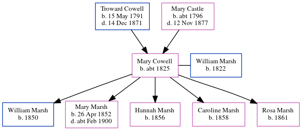

Mary Ann Marsh (née Cowell) c1825 -
[ Home ] | [ Calendar ] | [ Surnames Index ] | [ Census Index ] | [ Family History ]The child of Troward Cowell (an agricultural laborer) and Mary Castle, Mary Cowell, the three times great-aunt of Nigel Horne, was born in Wingham, Kent, England c. 18251, was baptized there on Jul 31, 1825 and married William Marsh (an agricultural laborer with whom she had 5 children: William, Mary Ann Harriet, Hannah, Caroline and Rosa J) in Eastry, Kent, England around Aug 18472. On Apr 7, 1861, she was living at Upper Weddington, Ash, Kent1.
Parents
- Troward was born on May 15, 1791
- Mary was born c. 1796
Children
- William was born in 1850
- Mary Ann Harriet was born on Apr 26, 1852
- Hannah was born in 1856
- Caroline was born in 1858
- Rosa J was born in 1861
Citations
- 1861 England, Wales & Scotland Census - Findmypast (was age 35 and the wife of the head of the household)
- Kent Marriages And Banns - Findmypast
Media
England Births & Baptisms 1538-1975 - R_884741197
England Births & Baptisms 1538-1975 - R_884740466
Kent marriages and banns - GBPRS/CANT/M/94072990/2
England & Wales marriages 1837-2005 - BMD/M/1847/3/AH/000359/020
1861 England, Wales & Scotland Census - GBC-1861-0003554437
Family Tree
Generated by ged2site. Last updated on Jun 11, 2024